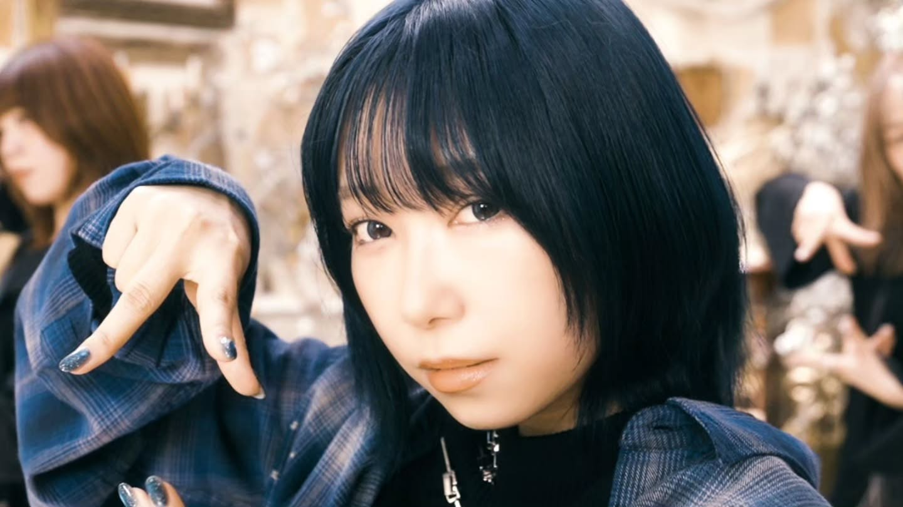
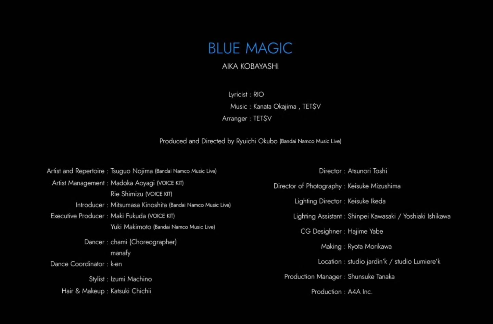

MOVIE / PRODUCTION STAFF
小林愛香 「BLUE MAGIC」Music Video



【Making/PA work】
小林愛香 @kyanstagram_
「BLUE MAGIC」Music Video
CD初回限定版収録メイキングディレクター
並びにMV制作進行として携わらせていただきました！
ーーーー
Credit
AIKA KOBAYASHI
Lyricist : RIO
Music : Kanata Okajima , TETSV
Arranger : TETSV
Produced and Directed by Ryuichi Okubo(Bandai Namco Music Live)
Artist and Repertoire : Tsuguo Nojima (Bandai Namco Music Live)
Director : Atsunori Toshi
Artist Management: Madoka Aoyagi (VOICE KIT)
Rie Shimizu (VOICE KIT)
Director of Photography : Keisuke Mizushima
Introducer : Mitsumasa Kinoshita (Bandai Namco Music Live)
Lighting Director : Keisuke Ikeda
Executive Producer : Maki Fukuda (VOICE KIT)
Lighting Assistant : Shinpei Kawasaki / Yoshiaki Ishikawa
Yuki Makimoto (Bandai Namco Music Live)
CG Desighner : Hajime Yabe
Dancer : chami (Choreographer) manafy
Making : Ryota Morikawa
Dance Coordinator:k-en
Location : studio jardin'k /studio Lumiere'k
Stylist : Izumi Machino
Production Manager : Shunsuke Tanaka
Hair & Makeup : Katsuki Chichii
Production : A4A Inc.